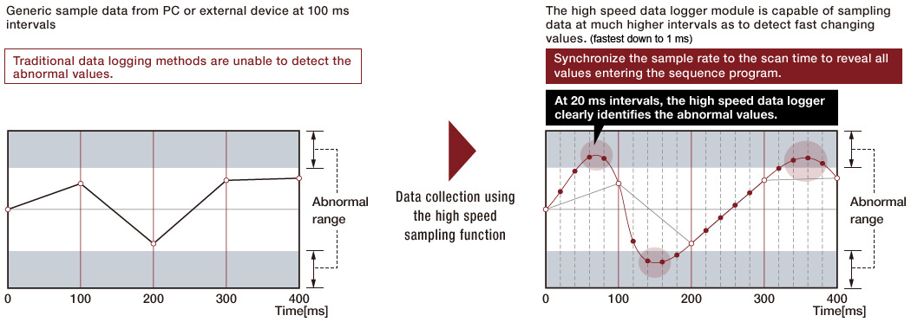
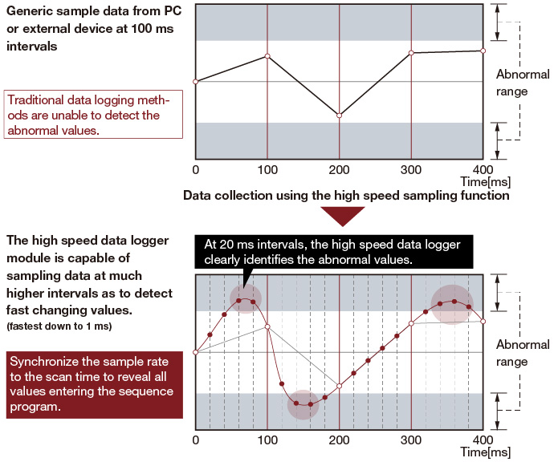
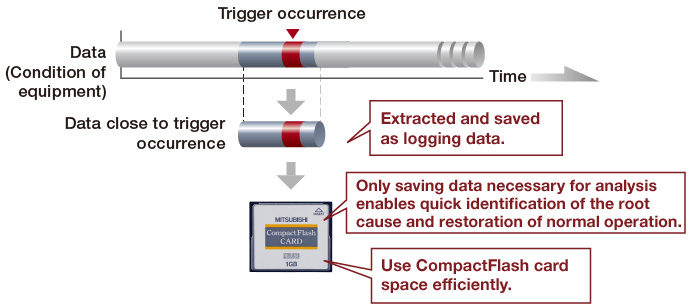
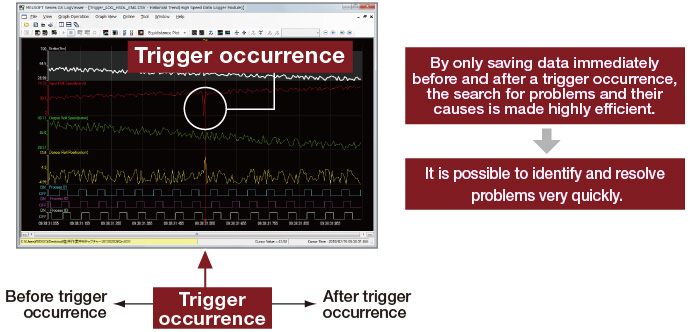
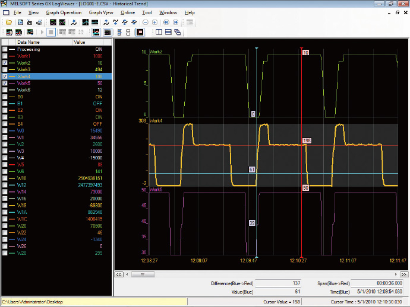
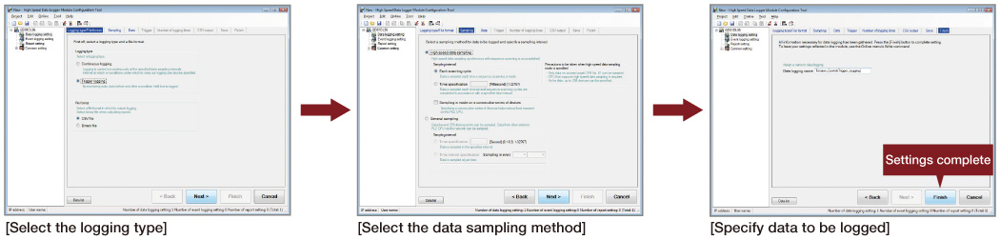
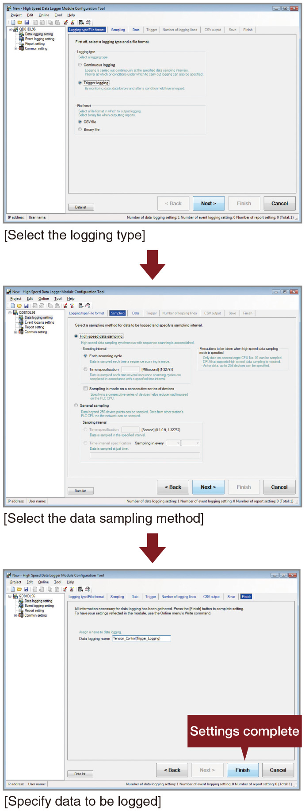
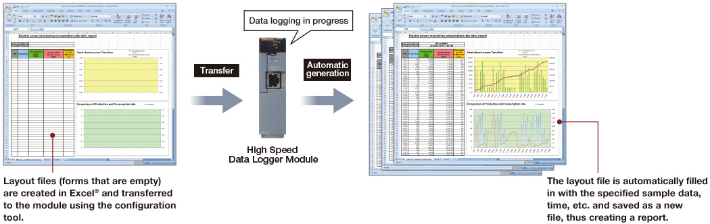
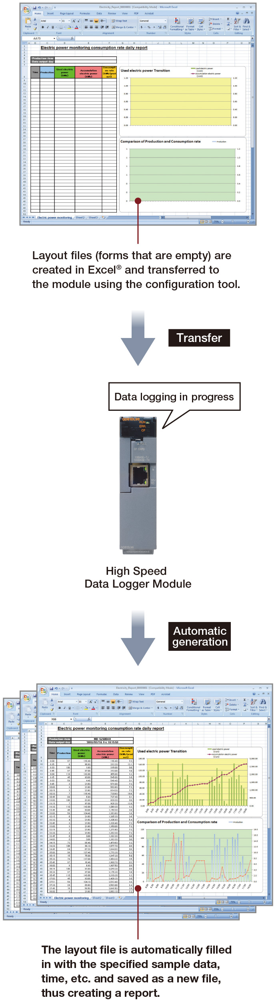

Controllers MELSEC-Q Series
Product features -Network-

High speed data logger
Fulfill the need for traceability and discover a powerful troubleshooting tool
High speed data logger module
- High speed data sampling function
The high speed data sampling function has the power to synchronize with the sequence program scan, ensuring that every value available to the program is logged for analysis. Using this method, it is possible to perform detailed operational analysis and identify existing or potential problems. - Trigger logging function
Trigger logging allows the user to specify, in great detail, when data should be saved. This greatly simplifies the process of investigating why a problem has occurred and assists in the quick identification of solutions. Additionally, it allows CompactFlash memory card space to be used efficiently. - The logging data display and analysis tool, GX LogViewer, has a simple and effective interface that is user customizable and includes features to maximize the efficiency of analyzing collected data. The High speed Data Logger Module Configuration Tool enables the user to create sophisticated data collection rules using an intuitive step-by-step process. The wizard like interface is beginner-friendly and includes features like importing global labels and device comments.
- Automatic generation of reports including graphs
By creating an Excel® layout file and transferring it to the module, the report function can automatically fill in the numbers using sampled data to create reports on a reoccurring basis. All kinds of reports may be created that include charts, graphs, and other visual aids. It is even possible to e-mail the reports automatically.
High speed data sampling function

- The high speed data sampling function supports only the host control CPU. (Other stations on the network are not supported.)
CPUs that support the high speed data sampling function
- High-speed Universal model QCPU
- Q03UDV, Q04UDV, Q06UDV, Q13UDV, Q26UDV
- Universal model QCPU
- Q03UD(E), Q04UD(E)H, Q06UD(E)H, Q10UD(E)H, Q13UD(E)H, Q20UD(E)H, Q26UD(E)H, Q50UDEH, Q100UDEH
(Compatible with QnU CPU modules starting with serial No. “11012” or higher.)
Trigger logging function


High speed data logger module tools
Data display and analysis tool: GX LogViewer

View a list of events or a trend graph [pictured left] either in real-time (online) or historical (saved file) modes. Helpful features ensure key information is immediately visible.
High speed data logger module configuration tool
Even making sophisticated data collection rules is easy to do using the intuitive step-by-step configuration process.

- The High speed Data Logger Module Tools are available at no additional cost. Please contact your nearest Mitsubishi Electric representative for details.
Automatic generation of reports including graphs
